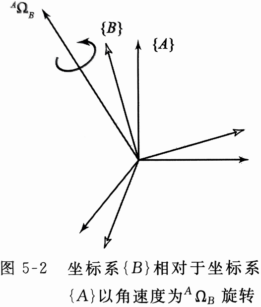

雅可比：速度和静力
时变位置和姿态的符号表示
速度矢量
速度矢量是位置矢量的导数
$^BV_Q=\frac{\mathrm{d}}{\mathrm{d}t}^BP_Q=\lim_{\Delta t\rightarrow0}\frac{^BP_Q(t+\Delta t)-^BP_Q(t)}{\Delta t}$
像其他矢量一样，速度矢量能在任意坐标系中描述，其参考坐标系用左上标注明，如果将$^BV_Q$在$\{A\}$下表示，可以写为：
$^A(^BV_Q)=^A(\frac{\mathrm{d}}{\mathrm{d}t}^BP_Q)=^A_BR^BV_Q$
我们经常讨论一个坐标系原点相对于某个世界参考坐标系的速度，而不考虑相对于任意坐标系中一般的点的速度，对此定义一个缩写符号：
$\upsilon_C=^UV_{CORG}$
式中的点为$\{C\}$的原点，参考坐标系为$\{U\}$
角速度矢量
角速度矢量$^A\Omega_B$描述了$\{B\}$相对于$\{A\}$的旋转，$^A\Omega_B$的方向为$\{B\}$相对于$\{A\}$的瞬时旋转轴，大小表示旋转速率，即$^A\Omega_B=\dot{\theta}\hat{K}$
像其他矢量一样，角速度矢量能在任意坐标系中描述，其参考坐标系用左上标注明，$^C(^A\Omega_B)$就是$\{B\}$相对于$\{A\}$的角速度在$\{C\}$中的描述
对于参考坐标系已知的简单情况，我们也定义一个缩写符号：
$\omega_C=^U\Omega_C$
刚体的线速度和角速度
线速度
把$\{B\}$固连在一刚体上，要求描述$^BQ$相对于固定坐标系$\{A\}$的运动
根据绝对速度等于相对速度加牵连速度，我们得到：
$^AV_Q=^AV_{BORG}+^A(^BV_Q)=^AV_{BORG}+^A_BR^BV_Q$
上式只适用于$\{A\}$和$\{B\}$姿态保持不变的情况
角速度
现在讨论$\{B\}$相对于$\{A\}$以$^A\Omega_B$旋转，且原点始终保持重合、相对线速度为零的情况
先假设$^BV_Q=0$，根据线速度矢量等于角速度矢量叉乘位置矢量，有：
$^AV_Q=^A\Omega_B\times^AQ$
再考虑$^BV_Q\neq0$，加上此速度分量，得：
$^AV_Q=^A(^BV_Q)+^A\Omega_B\times^AQ=^A_BR^BV_Q+^A\Omega_B\times^A_BR^BQ$
联立线速度和角速度
将上式扩展到$\{B\}$原点运动的情况，将牵连速度加上得：
$^AV_Q=^AV_{BORG}+^A_BR^BV_Q+^A\Omega_B\times^A_BR^BQ$
这就是相对于$\{A\}$的$\{B\}$中的固定矢量的速度普遍公式
机器人连杆的运动
在考虑机器人连杆运动时，一般以$\{0\}$为参考坐标系，因此连杆坐标系$\{i\}$的线速度为$v_i$，角速度为$\omega_i$
我们先研究一对相邻连杆的线速度与角速度在各自坐标系的表达之间的关系（注意与相对速度的概念区分开来，此处是绝对速度矢量在不同坐标系下的描述），即$^iv_i$、$^i\omega_i$与$^{i+1}v_{i+1}$、$^{i+1}\omega_{i+1}$之间的关系

当两个角速度矢量都是相对于相同的坐标系时，那么这些角速度能够相加，所以连杆$i+1$的角速度等于连杆$i$的角速度加上一个由于关节$i+1$的角速度引起的分量
$^i\omega_{i+1}=^i\omega_i+^i_{i+1}R\dot{\theta}_{i+1}\hat{Z}_{i+1}$
其中$\dot{\theta}_{i+1}\hat{Z}_{i+1}=^{i+1}\begin{bmatrix}0\\0\\\hat{\theta}_{i+1}\end{bmatrix}$，旋转矩阵将其转换为在$\{i\}$下的表达
上式两边同乘$^{i+1}_{i}R$，可以得到连杆$i+1$的角速度相对于$\{i+1\}$的表达式：
$^{i+1}\omega_{i+1}=^{i+1}_iR^i\omega_i+\dot{\theta}_{i+1}\hat{Z}_{i+1}$①
$\{i+1\}$原点的线速度等于$\{i\}$原点的线速度加上一个由于连杆$i+1$的角速度引起的新的分量：
$^iv_{i+1}=^iv_i+^i\omega_i\times^iP_{i+1}$
上式两边同乘$^{i+1}_{i}R$，得：
$^{i+1}v_{i+1}=^{i+1}_{i}R(^iv_i+^i\omega_i\times^iP_{i+1})$②
式①②是关节$i+1$为旋转关节的情况，对于移动关节，相应的关系为：
$^{i+1}\omega_{i+1}=^{i+1}_iR^i\omega_i$
$^{i+1}v_{i+1}=^{i+1}_iR(^iv_i+^i\omega_i\times^iP_{i+1})+\dot{d}_{i+1}{}^{i+1}\hat{Z}_{i+1}$
从一个连杆到下一个连杆依次应用这些公式，可以计算出最后一个连杆在自身坐标系$\{N\}$中表达的角速度$^N\omega_N$和线速度$^Nv_N$，用$^0_NR$去左乘这些速度即可向基坐标进行旋转变换
雅可比
雅可比矩阵是多维形式的导数，例如，假设有6个函数，每个函数都有6个独立的变量：
$y_1=f_1(x_1,x_2,x_3,x_4,x_5,x_6)$
$y_2=f_1(x_1,x_2,x_3,x_4,x_5,x_6)$
$\vdots$
$y_6=f_1(x_1,x_2,x_3,x_4,x_5,x_6)$
用矢量简记为：
$Y=F(X)$
现在如果想要计算出$y_i$的微分关于$x_j$的微分的函数，可应用多元函数求导法则计算得到：
$\delta y_1=\frac{\partial f_1}{\partial x_1}\delta x_1+\frac{\partial f_1}{\partial x_2}\delta x_2+\cdots+\frac{\partial f_1}{\partial x_6}\delta x_6$
$\delta y_2=\frac{\partial f_1}{\partial x_1}\delta x_1+\frac{\partial f_1}{\partial x_2}\delta x_2+\cdots+\frac{\partial f_1}{\partial x_6}\delta x_6$
$\vdots$
$\delta y_6=\frac{\partial f_1}{\partial x_1}\delta x_1+\frac{\partial f_1}{\partial x_2}\delta x_2+\cdots+\frac{\partial f_1}{\partial x_6}\delta x_6$
用矢量简记为：
$\delta Y=\frac{\partial F}{\partial X}\delta X$
上式中的$6\times6$的偏微分矩阵为我们所说的雅可比矩阵
如果$f_i(X)$都是非线性函数，那么这些偏微分都是$x_j$的函数，因此可采用如下表示：
$\delta Y=J(X)\delta X$
将上式两端同时除以时间的微分，可以将雅可比矩阵看成$X$中的速度向$Y$中速度的映射：
$\dot{Y}=J(X)\dot{X}$
在机器人学中，操作臂末端的位姿与一系列关节角也是上式中$Y$与$X$的关系，求导后我们可以使用雅可比将关节速度与操作臂末端的笛卡尔速度联系起来，得到：
$^0\boldsymbol{v}=^0J(\Theta)\dot{\Theta}$
式中$\Theta$是操作臂关节角矢量，$\boldsymbol{v}$是笛卡尔速度矢量，左上标表示笛卡尔速度所参考的坐标系，当参考坐标系很明显而不用说明时可以省去
对于通常的六关节机器人，雅可比矩阵是$6\times6$维的，$\dot{\Theta}$是$6\times1$维的，$^0\boldsymbol{v}$也是$6\times1$维的，由一个$3\times1$的线速度矢量和$3\times1$的角速度矢量排列起来的：
$^0\boldsymbol{v}=\begin{bmatrix}^0\boldsymbol{\upsilon}\\^0\boldsymbol{\omega}\end{bmatrix}$
可以定义任何维数的雅可比矩阵，雅可比矩阵的行数等于操作臂在笛卡尔空间中的自由度数量，列数等于操作臂的关节数量
雅可比矩阵参考坐标系的变换
已知$\{B\}$中的雅可比矩阵：
$\begin{bmatrix}^B\boldsymbol{\upsilon}\\^B\boldsymbol{\omega}\end{bmatrix}=^B\boldsymbol{v}=^BJ(\Theta)\dot{\Theta}$
对于如何给出雅可比矩阵在$\{A\}$中的表达式，首先注意到$\{B\}$中的笛卡尔速度矢量可通过如下变换得到相对于$\{A\}$的表达式：
$\begin{bmatrix}^A\boldsymbol{\upsilon}\\^A\boldsymbol{\omega}\end{bmatrix}=\begin{bmatrix}^A_BR&0\\0&^A_BR\end{bmatrix}\begin{bmatrix}^B\boldsymbol{\upsilon}\\^B\boldsymbol{\omega}\end{bmatrix}$
因此可以得到：
$\begin{bmatrix}^A\boldsymbol{\upsilon}\\^A\boldsymbol{\omega}\end{bmatrix}=\begin{bmatrix}^A_BR&0\\0&^A_BR\end{bmatrix}{}^BJ(\Theta)\dot{\Theta}$
于是雅可比矩阵参考坐标系的变换为：
$^AJ(\Theta)=\begin{bmatrix}^A_BR&0\\0&^A_BR\end{bmatrix}{}^BJ(\Theta)$
奇异性
如果雅可比矩阵可逆（也就是非奇异的），那么已知笛卡尔速度就可以对该矩阵求逆计算出关节的速度：
$\dot{\Theta}=J^{-1}(\Theta)\boldsymbol{v}$
但是雅可比矩阵不是对于所有的$\Theta$值都可逆，大多数操作臂都有使得雅可比矩阵奇异的$\Theta$值，这些位置就称为机构的奇异位形或简称奇异性
奇异位形的分类有一些深入研究，但目前我们先将它们大致分为两类：
$1)$工作空间边界的奇异位形出现在操作臂完全展开或者收回使得末端执行器处于非常接近工作空间边界的情况
$2)$工作空间内部的奇异位形总是远离工作空间的边界，通常是由于两个或两个以上的关节轴线共线引起的
当操作臂处于奇异位形时会失去一个或多个自由度，即在笛卡尔空间的某个方向上无论选择什么样的关节速度都不能使机器人手臂运动
操作臂的静力
操作臂的链式结构特性让我们想到力和力矩是如何从一个连杆向下一个连杆传递的，考虑操作臂的自由末端在工作空间推动某个物体或用手部抓举某个负载的典型情况，我们希望求出保持系统静态平衡的关节力矩
对于操作臂的静力，首先锁定所有关节使得操作臂成为一个结构，再进行理论力学的静力分析方法
我们为相邻杆件所施加的力和力矩定义以下特殊的符号：
$f_i=$连杆$i-1$施加在连杆$i$上的力
$n_i=$连杆$i-1$施加在连杆$i$上的力矩

对于单个连杆的静力-力矩平衡，有：
$\Sigma f=^if_i-^if_{i+1}=0$
$\Sigma n=^in_i-^in_{i+1}-^iP_{i+1}\times^if_{i+1}=0$
这样我们就可以从施加于机器人末端执行器的力和力矩的描述开始可以计算出作用于每一个连杆的力和力矩，对上式进行整理以便从高序号连杆向低序号连杆进行迭代求解得到：
$^if_i=^if_{i+1}$
$^in_i=^in_{i+1}+^iP_{i+1}\times^if_{i+1}$
再按照定义在连杆自身坐标系中的力和力矩写出这些表达式得：
$^if_i=^i_{i+1}R^{i+1}f_{i+1}$
$^in_i=^i_{i+1}R^{i+1}n_{i+1}+^iP_{i+1}\times^if_{i+1}$
对于一个关节，除了绕关节轴的力矩靠关节驱动提供之外，力和力矩矢量的其他分量都可以由操作臂机构本身来平衡，因此保持系统静平衡的关节力矩等于关节轴矢量与施加在连杆上的力矩矢量的点乘：
$\tau_i=^in_i^T{}^i\hat{Z}_i$
对于关节$i$是移动关节的情况，可以算出关节驱动力为：
$\tau_i=^if_i^T{}^i\hat{Z}_i$
力域中的雅可比
当力作用在机构上时，如果机构经过一个位移，就做了功，令位移趋向于无穷小就可以用虚功原理描述静止的情况
功是具有能量的单位，所以在任何广义坐标系下的测量值都相同，即笛卡尔空间做的功（力与位移）等于关节空间做的功（力矩与角位移）。在多维空间中，功是一个力或力矩矢量与位移矢量的点积，由此我们得到：
$\mathcal{F}\cdot\delta\chi=\tau\cdot\delta\Theta$
式中$\mathcal{F}$是作用在末端执行器上的$6\times1$维笛卡尔力-力矩矢量，$\delta\chi$是末端执行器的$6\times1$维无穷小笛卡尔位移矢量，$\tau$是$6\times1$维关节力矩矢量，$\delta\Theta$是$6\times1$维无穷小关节位移矢量
上式也可写成：
$\mathcal{F}^T\delta\chi=\tau^T\delta\Theta$
雅可比矩阵的定义为：
$\delta\chi=J\delta\Theta$
因此可写出：
$\mathcal{F}^TJ\delta\Theta=\tau^T\delta\Theta$
$\mathcal{F}^TJ=\tau^T$
对两边转置得：
$\tau=J^T\mathcal{F}$
由此雅可比矩阵的转置将作用在手臂上的笛卡尔力映射成了等效关节力矩
当雅可比矩阵奇异时，存在某些特定的方向，末端执行器在这些方向上不能施加期望的静态力，意味着在力域中和位置域中奇异都是存在的
速度和静力的笛卡尔变换
根据前文的讨论我们有：
$\boldsymbol{v}=\begin{bmatrix}\upsilon\\\omega\end{bmatrix}$
$\mathcal{F}=\begin{bmatrix}F\\N\end{bmatrix}$
我们现在给出将这些量从一个坐标系映射到另一个坐标系的变换矩阵
在机器人连杆的运动一节已经得到下面的变换公式：
$^{i+1}\omega_{i+1}=^{i+1}_iR^i\omega_i+\dot{\theta}_{i+1}\hat{Z}_{i+1}$
$^{i+1}v_{i+1}=^{i+1}_{i}R(^iv_i+^i\omega_i\times^iP_{i+1})$
将$\{i\}$换成$\{A\}$，$\{i+1\}$换成$\{B\}$，以及在刚性坐标系下令$\dot{\theta}=0$，再写为矩阵的形式得到：
$\begin{bmatrix}^B\upsilon_B\\^B\omega_B\end{bmatrix}=\begin{bmatrix}^B_AR&-^B_AR^AP_{BORG}\times\\0&^B_AR\end{bmatrix}\begin{bmatrix}^A\upsilon_A\\^A\omega_A\end{bmatrix}$
原式中$P$乘在右边，为了转换为左乘的形式表达在矩阵中，我们将其写成反对称矩阵：
$P\times=\begin{bmatrix}0&-p_z&p_y\\p_z&0&-p_x\\-p_y&p_x&0\end{bmatrix}$
由此新得到的变换矩阵被称为速度变换矩阵，用符号$T_\upsilon$表示，它是一个把$\{A\}$中的速度映射到$\{B\}$中的速度的速度变换，简记为：
$^B\boldsymbol{v}_B=^B_AT_\upsilon^A\boldsymbol{v}_A$
将这个变换过程反过来对$^B_AT_\upsilon$求逆即可：
$^A_BT_\upsilon=^B_AT_\upsilon^{-1}=\begin{bmatrix}^A_BR&^AP_{BORG}\times^A_BR\\0&^A_BR\end{bmatrix}$
同样的，对操作臂的力学一节中得到的公式：
$^if_i=^i_{i+1}R^{i+1}f_{i+1}$
$^in_i=^i_{i+1}R^{i+1}n_{i+1}+^iP_{i+1}\times^if_{i+1}$
我们推出力矢量由$\{A\}$到$\{B\}$的映射关系为：
$\begin{bmatrix}^AF_A\\^AN_A\end{bmatrix}=\begin{bmatrix}^A_BR&0\\^AP_{BORG}&^A_BR\end{bmatrix}\begin{bmatrix}^BF_B\\^BN_B\end{bmatrix}$
简记为：
$^A\mathcal{F}_A=^A_BT_f^B\mathcal{F}_B$
式中$T_f$表示力-力矩变换矩阵
本章完